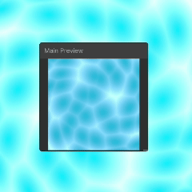
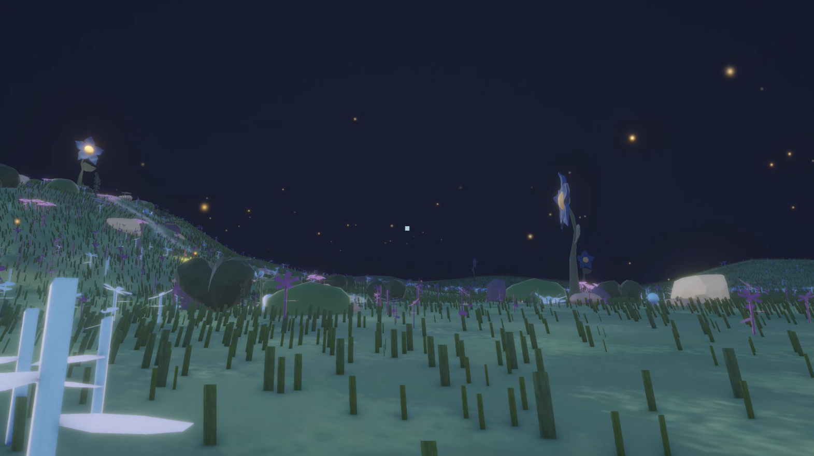
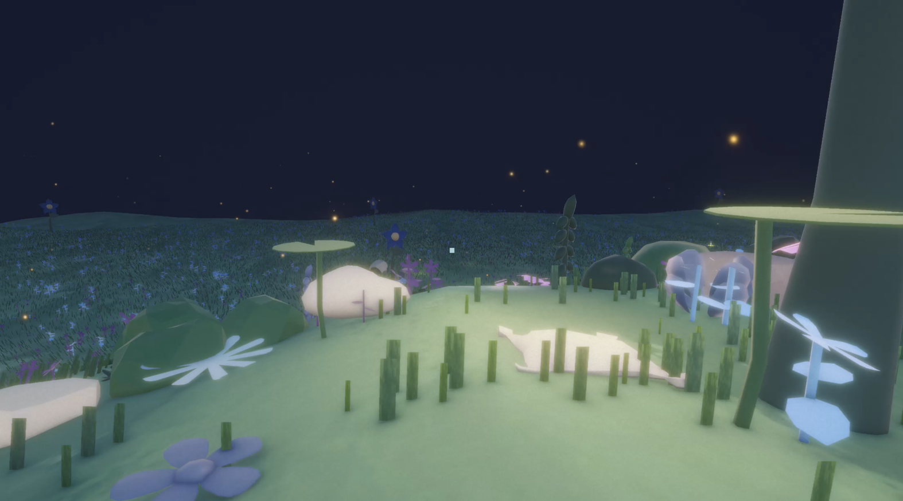

An immersive 3D environment depicting the transition from social misalignment to the peace of solitude.
Made with: Unity • Blender • BandLab • C#
Overview
Elsewhere turns the personal experience of feeling out of place in social settings into an interactive 3D space. It begins in a chaotic party environment and gradually guides the player into a quieter, reflective landscape through player-driven interaction. The world is built around withdrawal as a process, with emotional progression communicated through movement, audio, visual distortion, spatial design, and interaction.


Social Submersion
The experience begins in a surreal party environment constructed without visible people. Objects such as cups, bottles, stools, and decorations suggest an active social gathering, while their scattered placement creates a sense of lingering presence and disorder.
Large bubbles obstruct movement and force navigation through the space, making traversal feel restrictive and uncertain. Combined with animated water-like shaders, a fisheye lens, chromatic aberration, and bloom, the space is visually unstable and difficult to interpret. These elements create an environment that feels both lively and uncomfortable, reflecting emotional detachment despite being surrounded by an energetic social atmosphere.
Sound Design
Audio plays a key role in shaping the emotional progression of the experience. The opening soundscape combines an upbeat bass-and-drum loop with heavy reverb and a distant crowd ambience, creating the impression of an active social space while reinforcing the feeling of being physically present but mentally disconnected.
When the party collapses, the audio abruptly drops into silence, leaving only subtle white noise throughout the transition space. In the final environment, this is replaced by soft music and ambient cricket sounds, establishing a calm nighttime atmosphere and emphasising the contrast between the two worlds.


Interaction & Progression
Progression is driven by a series of hidden balloons placed throughout the environment. Players navigate the space searching for each one and popping them to continue forward, gradually shifting attention away from the central party area.
After the final balloon is popped, the party space collapses. Banners fall, stools topple, and balloons visibly deflate throughout the environment. This transformation externalises the anxiety that accompanied disengagement from social situations, reflecting the fear that withdrawing from a gathering may somehow spoil the experience for others.
The collapse guides the player into a narrow hallway lined with deflated balloons. This restrictive transition space acts as a moment of confrontation before opening into the final environment.

Looking From Elsewhere
The hallway opens into a wide natural landscape where open grass, soft lighting, and scattered flowers replace the dense visual noise of the previous environment. A large blue flower positioned on a distant hill acts as a focal point, subtly guiding movement while preserving a sense of freedom.
Large flowers blossom throughout the landscape, symbolising growth, vitality, and belonging. While the player leaves the party environment behind, the landscape suggests it still contributed to what came after. The flowers draw life from the world beneath them, reflecting the idea that even environments where we feel out of place can contribute to personal growth.

The experience concludes at a secluded resting point overlooking the landscape below. Rather than presenting solitude as isolation, Elsewhere frames it as a space of self-understanding, inviting reflection on individuality, belonging, and the value of appreciating others from a distance.
